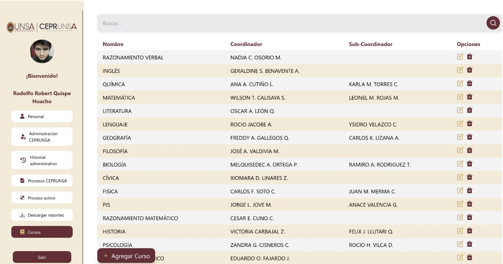
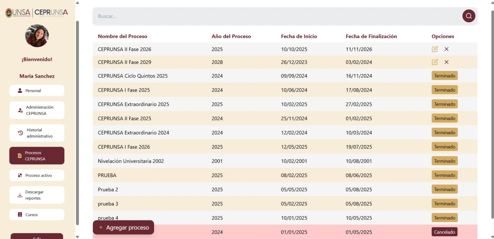
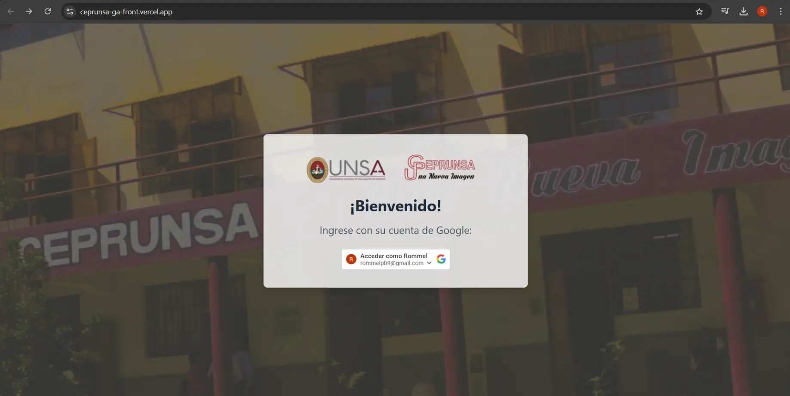
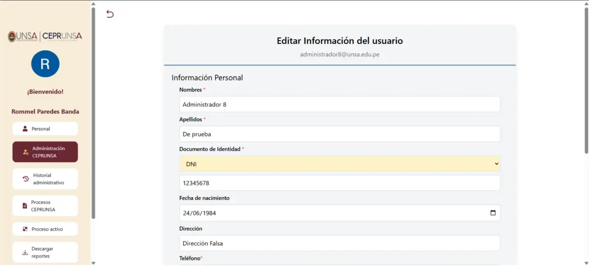

← Volver
El Problema
El Centro Preuniversitario de la UNSA (CEPRUNSA) gestionaba todos sus
procesos de personal de forma manual, utilizando hojas de cálculo y
documentos físicos. Esto generaba ineficiencias, riesgo de errores
humanos y dificultades para realizar un seguimiento centralizado y en
tiempo real del personal docente y administrativo.
La Solución
Para resolver esta problemática, se desarrolló un sistema web a medida
que centraliza y automatiza toda la gestión de Recursos Humanos. La
plataforma digitaliza el ciclo de vida completo del personal, desde su
registro hasta la finalización de sus procesos.
El sistema cuenta con las siguientes funcionalidades clave:
-
Gestión Integral de Personal: Permite crear,
consultar, actualizar y eliminar los perfiles de todo el personal
(administrativo, docente, supervisores, etc.).
-
Autenticación Segura: Inicio de sesión único a
través de cuentas de Google, garantizando un acceso seguro y
simplificado.
-
Control de Roles y Permisos: Administración
granular de 8 roles de usuario distintos, asegurando que cada
persona acceda únicamente a la información y funciones que le
corresponden.
-
Administración de Procesos y Cursos: Facilita la
creación y gestión de los ciclos académicos (procesos) y la
asignación de personal docente a los cursos correspondientes.
-
Generación de Reportes: Permite descargar informes
y historiales detallados por proceso y por rol, optimizando la toma
de decisiones administrativas.
Mi Rol y Contribuciones
-
Desarrollo Frontend: Construí la interfaz de
usuario utilizando React, creando componentes
reutilizables, modulares y responsivos. Mi enfoque fue garantizar
una experiencia de usuario fluida e intuitiva para facilitar la
adopción del sistema.
-
Aseguramiento de la Calidad (QA): Lideré el ciclo
completo de pruebas para garantizar la estabilidad y fiabilidad de
la aplicación, abarcando múltiples niveles:
-
Pruebas Unitarias y de Integración: Usé
Vitest y
React Testing Library para el frontend y
Django Test para el backend, asegurando la
correcta funcionalidad de componentes y módulos de forma aislada
y conjunta.
-
Pruebas de Extremo a Extremo (E2E): Automaticé
las pruebas de los flujos de usuario más críticos con
Cypress, validando la funcionalidad de la
aplicación de principio a fin desde la perspectiva del usuario.
-
Pruebas de API: Verifiqué la correcta
comunicación entre el cliente y el servidor mediante pruebas
exhaustivas a los endpoints de la API REST con
Postman.
Stack Tecnológico
React
PostgreSQL
Cypress
Postman
Vitest
React Testing Library
Django Test
Figma
Jira
Galería Visual



